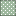
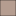

<!doctype html>
<html lang="en">
    <head>
        <meta charset="utf-8">
        <meta http-equiv="X-UA-Compatible" content="IE=edge">
        <meta name="viewport" content="initial-scale=1,user-scalable=no,maximum-scale=1,width=device-width">
        <meta name="mobile-web-app-capable" content="yes">
        <meta name="apple-mobile-web-app-capable" content="yes">
        <link rel="stylesheet" href="css/leaflet.css">
        <link rel="stylesheet" href="css/L.Control.Layers.Tree.css">
        <link rel="stylesheet" href="css/L.Control.Locate.min.css">
        <link rel="stylesheet" href="css/qgis2web.css">
        <link rel="stylesheet" href="css/fontawesome-all.min.css">
        <link rel="stylesheet" href="css/leaflet.photon.css">
        <link rel="stylesheet" href="css/leaflet-measure.css">
        <style>
        html, body, #map {
            width: 100%;
            height: 100%;
            padding: 0;
            margin: 0;
        }
        </style>
        <title></title>
    </head>
    <body>
        <div id="map">
        </div>
        <script src="js/qgis2web_expressions.js"></script>
        <script src="js/leaflet.js"></script>
        <script src="js/L.Control.Layers.Tree.min.js"></script>
        <script src="js/L.Control.Locate.min.js"></script>
        <script src="js/multi-style-layer.js"></script>
        <script src="js/leaflet.rotatedMarker.js"></script>
        <script src="js/leaflet.pattern.js"></script>
        <script src="js/leaflet-hash.js"></script>
        <script src="js/Autolinker.min.js"></script>
        <script src="js/rbush.min.js"></script>
        <script src="js/labelgun.min.js"></script>
        <script src="js/labels.js"></script>
        <script src="js/leaflet.photon.js"></script>
        <script src="js/leaflet-measure.js"></script>
        <script src="data/Vegetao_5.js"></script>
        <script src="data/CompensaoAmbiental_6.js"></script>
        <script src="data/Lavoura_7.js"></script>
        <script src="data/Estrada_8.js"></script>
        <script src="data/Pinus2023_9.js"></script>
        <script src="data/PinusGuacho_10.js"></script>
        <script src="data/Matrcula16078_11.js"></script>
        <script src="data/Matricula_dot_12.js"></script>
        <script>
        var map = L.map('map', {
            zoomControl:false, maxZoom:28, minZoom:1
        }).fitBounds([[-27.58334395831861,-51.12914352550419],[-27.576061955308056,-51.114077019882004]]);
        var hash = new L.Hash(map);
        map.attributionControl.setPrefix('<a href="https://github.com/qgis2web/qgis2web" target="_blank">qgis2web</a> &middot; <a href="https://leafletjs.com" title="A JS library for interactive maps">Leaflet</a> &middot; <a href="https://qgis.org">QGIS</a>');
        var autolinker = new Autolinker({truncate: {length: 30, location: 'smart'}});
        // remove popup's row if "visible-with-data"
        function removeEmptyRowsFromPopupContent(content, feature) {
         var tempDiv = document.createElement('div');
         tempDiv.innerHTML = content;
         var rows = tempDiv.querySelectorAll('tr');
         for (var i = 0; i < rows.length; i++) {
             var td = rows[i].querySelector('td.visible-with-data');
             var key = td ? td.id : '';
             if (td && td.classList.contains('visible-with-data') && feature.properties[key] == null) {
                 rows[i].parentNode.removeChild(rows[i]);
             }
         }
         return tempDiv.innerHTML;
        }
        // modify popup if contains media
        function addClassToPopupIfMedia(content, popup) {
            var tempDiv = document.createElement('div');
            tempDiv.innerHTML = content;
            var imgTd = tempDiv.querySelector('td img');
            if (imgTd) {
                var src = imgTd.getAttribute('src');
                if (/\.(jpg|jpeg|png|gif|bmp|webp|avif)$/i.test(src)) {
                    popup._contentNode.classList.add('media');
                    setTimeout(function() {
                        popup.update();
                    }, 10);
                } else if (/\.(mp3|wav|ogg|aac)$/i.test(src)) {
                    var audio = document.createElement('audio');
                    audio.controls = true;
                    audio.src = src;
                    imgTd.parentNode.replaceChild(audio, imgTd);
                    popup._contentNode.classList.add('media');
                    setTimeout(function() {
                        popup.setContent(tempDiv.innerHTML);
                        popup.update();
                    }, 10);
                } else if (/\.(mp4|webm|ogg|mov)$/i.test(src)) {
                    var video = document.createElement('video');
                    video.controls = true;
                    video.src = src;
                    video.style.width = "400px";
                    video.style.height = "300px";
                    video.style.maxHeight = "60vh";
                    video.style.maxWidth = "60vw";
                    imgTd.parentNode.replaceChild(video, imgTd);
                    popup._contentNode.classList.add('media');
                    // Aggiorna il popup quando il video carica i metadati
                    video.addEventListener('loadedmetadata', function() {
                        popup.update();
                    });
                    setTimeout(function() {
                        popup.setContent(tempDiv.innerHTML);
                        popup.update();
                    }, 10);
                } else {
                    popup._contentNode.classList.remove('media');
                }
            } else {
                popup._contentNode.classList.remove('media');
            }
        }
        var zoomControl = L.control.zoom({
            position: 'topleft'
        }).addTo(map);
        L.control.locate({locateOptions: {maxZoom: 19}}).addTo(map);
        var measureControl = new L.Control.Measure({
            position: 'topleft',
            primaryLengthUnit: 'meters',
            secondaryLengthUnit: 'kilometers',
            primaryAreaUnit: 'sqmeters',
            secondaryAreaUnit: 'hectares'
        });
        measureControl.addTo(map);
        document.getElementsByClassName('leaflet-control-measure-toggle')[0].innerHTML = '';
        document.getElementsByClassName('leaflet-control-measure-toggle')[0].className += ' fas fa-ruler';
        var bounds_group = new L.featureGroup([]);
        function setBounds() {
        }
        map.createPane('pane_GoogleSatellite_0');
        map.getPane('pane_GoogleSatellite_0').style.zIndex = 400;
        var layer_GoogleSatellite_0 = L.tileLayer('https://mt1.google.com/vt/lyrs=s&x={x}&y={y}&z={z}', {
            pane: 'pane_GoogleSatellite_0',
            opacity: 1.0,
            attribution: '<a href="https://www.google.at/permissions/geoguidelines/attr-guide.html">Map data ©2015 Google</a>',
            minZoom: 1,
            maxZoom: 28,
            minNativeZoom: 0,
            maxNativeZoom: 20
        });
        layer_GoogleSatellite_0;
        map.addLayer(layer_GoogleSatellite_0);
        map.createPane('pane_Orto_Segmentada_Col_Sao_Francisco00_1');
        map.getPane('pane_Orto_Segmentada_Col_Sao_Francisco00_1').style.zIndex = 401;
        var img_Orto_Segmentada_Col_Sao_Francisco00_1 = 'data/Orto_Segmentada_Col_Sao_Francisco00_1.png';
        var img_bounds_Orto_Segmentada_Col_Sao_Francisco00_1 = [[-27.579843330726703,-51.12532111969078],[-27.57622860199932,-51.121264524416745]];
        var layer_Orto_Segmentada_Col_Sao_Francisco00_1 = new L.imageOverlay(img_Orto_Segmentada_Col_Sao_Francisco00_1,
                                              img_bounds_Orto_Segmentada_Col_Sao_Francisco00_1,
                                              {pane: 'pane_Orto_Segmentada_Col_Sao_Francisco00_1'});
        bounds_group.addLayer(layer_Orto_Segmentada_Col_Sao_Francisco00_1);
        map.addLayer(layer_Orto_Segmentada_Col_Sao_Francisco00_1);
        map.createPane('pane_Orto_Segmentada_Col_Sao_Francisco01_2');
        map.getPane('pane_Orto_Segmentada_Col_Sao_Francisco01_2').style.zIndex = 402;
        var img_Orto_Segmentada_Col_Sao_Francisco01_2 = 'data/Orto_Segmentada_Col_Sao_Francisco01_2.png';
        var img_bounds_Orto_Segmentada_Col_Sao_Francisco01_2 = [[-27.583190847965245,-51.12532492440473],[-27.579839732966825,-51.12126849530979]];
        var layer_Orto_Segmentada_Col_Sao_Francisco01_2 = new L.imageOverlay(img_Orto_Segmentada_Col_Sao_Francisco01_2,
                                              img_bounds_Orto_Segmentada_Col_Sao_Francisco01_2,
                                              {pane: 'pane_Orto_Segmentada_Col_Sao_Francisco01_2'});
        bounds_group.addLayer(layer_Orto_Segmentada_Col_Sao_Francisco01_2);
        map.addLayer(layer_Orto_Segmentada_Col_Sao_Francisco01_2);
        map.createPane('pane_Orto_Segmentada_Col_Sao_Francisco10_3');
        map.getPane('pane_Orto_Segmentada_Col_Sao_Francisco10_3').style.zIndex = 403;
        var img_Orto_Segmentada_Col_Sao_Francisco10_3 = 'data/Orto_Segmentada_Col_Sao_Francisco10_3.png';
        var img_bounds_Orto_Segmentada_Col_Sao_Francisco10_3 = [[-27.57984606608655,-51.12126849530979],[-27.576232199209162,-51.11809040979084]];
        var layer_Orto_Segmentada_Col_Sao_Francisco10_3 = new L.imageOverlay(img_Orto_Segmentada_Col_Sao_Francisco10_3,
                                              img_bounds_Orto_Segmentada_Col_Sao_Francisco10_3,
                                              {pane: 'pane_Orto_Segmentada_Col_Sao_Francisco10_3'});
        bounds_group.addLayer(layer_Orto_Segmentada_Col_Sao_Francisco10_3);
        map.addLayer(layer_Orto_Segmentada_Col_Sao_Francisco10_3);
        map.createPane('pane_Orto_Segmentada_Col_Sao_Francisco11_4');
        map.getPane('pane_Orto_Segmentada_Col_Sao_Francisco11_4').style.zIndex = 404;
        var img_Orto_Segmentada_Col_Sao_Francisco11_4 = 'data/Orto_Segmentada_Col_Sao_Francisco11_4.png';
        var img_bounds_Orto_Segmentada_Col_Sao_Francisco11_4 = [[-27.583193583712774,-51.121272176987944],[-27.579843330726703,-51.11809427674585]];
        var layer_Orto_Segmentada_Col_Sao_Francisco11_4 = new L.imageOverlay(img_Orto_Segmentada_Col_Sao_Francisco11_4,
                                              img_bounds_Orto_Segmentada_Col_Sao_Francisco11_4,
                                              {pane: 'pane_Orto_Segmentada_Col_Sao_Francisco11_4'});
        bounds_group.addLayer(layer_Orto_Segmentada_Col_Sao_Francisco11_4);
        map.addLayer(layer_Orto_Segmentada_Col_Sao_Francisco11_4);
        function pop_Vegetao_5(feature, layer) {
            var popupContent = '<table>\
                    <tr>\
                        <td colspan="2">' + (feature.properties['fid'] !== null ? autolinker.link(String(feature.properties['fid']).replace(/'/g, '\'').toLocaleString()) : '') + '</td>\
                    </tr>\
                    <tr>\
                        <td colspan="2">' + (feature.properties['area_ha'] !== null ? autolinker.link(String(feature.properties['area_ha']).replace(/'/g, '\'').toLocaleString()) : '') + '</td>\
                    </tr>\
                </table>';
            var content = removeEmptyRowsFromPopupContent(popupContent, feature);
			layer.on('popupopen', function(e) {
				addClassToPopupIfMedia(content, e.popup);
			});
			layer.bindPopup(content, { maxHeight: 400 });
        }

        function style_Vegetao_5_0() {
            return {
                pane: 'pane_Vegetao_5',
                opacity: 1,
                color: 'rgba(35,35,35,1.0)',
                dashArray: '',
                lineCap: 'butt',
                lineJoin: 'miter',
                weight: 1.0, 
                fill: true,
                fillOpacity: 1,
                fillColor: 'rgba(152,78,163,1.0)',
                interactive: false,
            }
        }
        map.createPane('pane_Vegetao_5');
        map.getPane('pane_Vegetao_5').style.zIndex = 405;
        map.getPane('pane_Vegetao_5').style['mix-blend-mode'] = 'normal';
        var layer_Vegetao_5 = new L.geoJson(json_Vegetao_5, {
            attribution: '',
            interactive: false,
            dataVar: 'json_Vegetao_5',
            layerName: 'layer_Vegetao_5',
            pane: 'pane_Vegetao_5',
            onEachFeature: pop_Vegetao_5,
            style: style_Vegetao_5_0,
        });
        bounds_group.addLayer(layer_Vegetao_5);
        function pop_CompensaoAmbiental_6(feature, layer) {
            var popupContent = '<table>\
                    <tr>\
                        <td colspan="2">' + (feature.properties['fid'] !== null ? autolinker.link(String(feature.properties['fid']).replace(/'/g, '\'').toLocaleString()) : '') + '</td>\
                    </tr>\
                    <tr>\
                        <td colspan="2">' + (feature.properties['area_ha'] !== null ? autolinker.link(String(feature.properties['area_ha']).replace(/'/g, '\'').toLocaleString()) : '') + '</td>\
                    </tr>\
                </table>';
            var content = removeEmptyRowsFromPopupContent(popupContent, feature);
			layer.on('popupopen', function(e) {
				addClassToPopupIfMedia(content, e.popup);
			});
			layer.bindPopup(content, { maxHeight: 400 });
        }

        function style_CompensaoAmbiental_6_0() {
            return {
                pane: 'pane_CompensaoAmbiental_6',
                opacity: 1,
                color: 'rgba(0,0,0,1.0)',
                dashArray: '',
                lineCap: 'butt',
                lineJoin: 'miter',
                weight: 1.0, 
                fill: true,
                fillOpacity: 1,
                fillColor: 'rgba(247,129,191,1.0)',
                interactive: false,
            }
        }
        function style_CompensaoAmbiental_6_1() {
            return {
                pane: 'pane_CompensaoAmbiental_6',
                interactive: false,
            }
        }
        map.createPane('pane_CompensaoAmbiental_6');
        map.getPane('pane_CompensaoAmbiental_6').style.zIndex = 406;
        map.getPane('pane_CompensaoAmbiental_6').style['mix-blend-mode'] = 'normal';
        var layer_CompensaoAmbiental_6 = new L.geoJson.multiStyle(json_CompensaoAmbiental_6, {
            attribution: '',
            interactive: false,
            dataVar: 'json_CompensaoAmbiental_6',
            layerName: 'layer_CompensaoAmbiental_6',
            pane: 'pane_CompensaoAmbiental_6',
            onEachFeature: pop_CompensaoAmbiental_6,
            styles: [style_CompensaoAmbiental_6_0,style_CompensaoAmbiental_6_1,]
        });
        bounds_group.addLayer(layer_CompensaoAmbiental_6);
        function pop_Lavoura_7(feature, layer) {
            var popupContent = '<table>\
                    <tr>\
                        <td colspan="2">' + (feature.properties['fid'] !== null ? autolinker.link(String(feature.properties['fid']).replace(/'/g, '\'').toLocaleString()) : '') + '</td>\
                    </tr>\
                    <tr>\
                        <td colspan="2">' + (feature.properties['area_ha'] !== null ? autolinker.link(String(feature.properties['area_ha']).replace(/'/g, '\'').toLocaleString()) : '') + '</td>\
                    </tr>\
                </table>';
            var content = removeEmptyRowsFromPopupContent(popupContent, feature);
			layer.on('popupopen', function(e) {
				addClassToPopupIfMedia(content, e.popup);
			});
			layer.bindPopup(content, { maxHeight: 400 });
        }

        function style_Lavoura_7_0() {
            return {
                pane: 'pane_Lavoura_7',
                opacity: 1,
                color: 'rgba(0,0,0,1.0)',
                dashArray: '',
                lineCap: 'butt',
                lineJoin: 'miter',
                weight: 1.0, 
                fill: true,
                fillOpacity: 1,
                fillColor: 'rgba(108,59,33,1.0)',
                interactive: false,
            }
        }
        map.createPane('pane_Lavoura_7');
        map.getPane('pane_Lavoura_7').style.zIndex = 407;
        map.getPane('pane_Lavoura_7').style['mix-blend-mode'] = 'normal';
        var layer_Lavoura_7 = new L.geoJson(json_Lavoura_7, {
            attribution: '',
            interactive: false,
            dataVar: 'json_Lavoura_7',
            layerName: 'layer_Lavoura_7',
            pane: 'pane_Lavoura_7',
            onEachFeature: pop_Lavoura_7,
            style: style_Lavoura_7_0,
        });
        bounds_group.addLayer(layer_Lavoura_7);
        function pop_Estrada_8(feature, layer) {
            var popupContent = '<table>\
                    <tr>\
                        <td colspan="2">' + (feature.properties['fid'] !== null ? autolinker.link(String(feature.properties['fid']).replace(/'/g, '\'').toLocaleString()) : '') + '</td>\
                    </tr>\
                    <tr>\
                        <td colspan="2">' + (feature.properties['area_ha'] !== null ? autolinker.link(String(feature.properties['area_ha']).replace(/'/g, '\'').toLocaleString()) : '') + '</td>\
                    </tr>\
                </table>';
            var content = removeEmptyRowsFromPopupContent(popupContent, feature);
			layer.on('popupopen', function(e) {
				addClassToPopupIfMedia(content, e.popup);
			});
			layer.bindPopup(content, { maxHeight: 400 });
        }

        function style_Estrada_8_0() {
            return {
                pane: 'pane_Estrada_8',
                opacity: 1,
                color: 'rgba(82,82,82,1.0)',
                dashArray: '',
                lineCap: 'butt',
                lineJoin: 'miter',
                weight: 1.0, 
                fill: true,
                fillOpacity: 1,
                fillColor: 'rgba(204,204,204,1.0)',
                interactive: false,
            }
        }
        map.createPane('pane_Estrada_8');
        map.getPane('pane_Estrada_8').style.zIndex = 408;
        map.getPane('pane_Estrada_8').style['mix-blend-mode'] = 'normal';
        var layer_Estrada_8 = new L.geoJson(json_Estrada_8, {
            attribution: '',
            interactive: false,
            dataVar: 'json_Estrada_8',
            layerName: 'layer_Estrada_8',
            pane: 'pane_Estrada_8',
            onEachFeature: pop_Estrada_8,
            style: style_Estrada_8_0,
        });
        bounds_group.addLayer(layer_Estrada_8);
        function pop_Pinus2023_9(feature, layer) {
            var popupContent = '<table>\
                    <tr>\
                        <td colspan="2">' + (feature.properties['fid'] !== null ? autolinker.link(String(feature.properties['fid']).replace(/'/g, '\'').toLocaleString()) : '') + '</td>\
                    </tr>\
                    <tr>\
                        <td colspan="2">' + (feature.properties['area_ha'] !== null ? autolinker.link(String(feature.properties['area_ha']).replace(/'/g, '\'').toLocaleString()) : '') + '</td>\
                    </tr>\
                </table>';
            var content = removeEmptyRowsFromPopupContent(popupContent, feature);
			layer.on('popupopen', function(e) {
				addClassToPopupIfMedia(content, e.popup);
			});
			layer.bindPopup(content, { maxHeight: 400 });
        }

        function style_Pinus2023_9_0() {
            return {
                pane: 'pane_Pinus2023_9',
                opacity: 1,
                color: 'rgba(0,0,0,1.0)',
                dashArray: '',
                lineCap: 'butt',
                lineJoin: 'miter',
                weight: 1.0, 
                fill: true,
                fillOpacity: 1,
                fillColor: 'rgba(148,209,128,1.0)',
                interactive: false,
            }
        }
        map.createPane('pane_Pinus2023_9');
        map.getPane('pane_Pinus2023_9').style.zIndex = 409;
        map.getPane('pane_Pinus2023_9').style['mix-blend-mode'] = 'normal';
        var layer_Pinus2023_9 = new L.geoJson(json_Pinus2023_9, {
            attribution: '',
            interactive: false,
            dataVar: 'json_Pinus2023_9',
            layerName: 'layer_Pinus2023_9',
            pane: 'pane_Pinus2023_9',
            onEachFeature: pop_Pinus2023_9,
            style: style_Pinus2023_9_0,
        });
        bounds_group.addLayer(layer_Pinus2023_9);
        function pop_PinusGuacho_10(feature, layer) {
            var popupContent = '<table>\
                    <tr>\
                        <td colspan="2">' + (feature.properties['fid'] !== null ? autolinker.link(String(feature.properties['fid']).replace(/'/g, '\'').toLocaleString()) : '') + '</td>\
                    </tr>\
                    <tr>\
                        <td colspan="2">' + (feature.properties['area_ha'] !== null ? autolinker.link(String(feature.properties['area_ha']).replace(/'/g, '\'').toLocaleString()) : '') + '</td>\
                    </tr>\
                </table>';
            var content = removeEmptyRowsFromPopupContent(popupContent, feature);
			layer.on('popupopen', function(e) {
				addClassToPopupIfMedia(content, e.popup);
			});
			layer.bindPopup(content, { maxHeight: 400 });
        }

        function style_PinusGuacho_10_0() {
            return {
                pane: 'pane_PinusGuacho_10',
                opacity: 1,
                color: 'rgba(0,0,0,1.0)',
                dashArray: '',
                lineCap: 'butt',
                lineJoin: 'miter',
                weight: 1.0, 
                fill: true,
                fillOpacity: 1,
                fillColor: 'rgba(62,113,61,1.0)',
                interactive: false,
            }
        }
        map.createPane('pane_PinusGuacho_10');
        map.getPane('pane_PinusGuacho_10').style.zIndex = 410;
        map.getPane('pane_PinusGuacho_10').style['mix-blend-mode'] = 'normal';
        var layer_PinusGuacho_10 = new L.geoJson(json_PinusGuacho_10, {
            attribution: '',
            interactive: false,
            dataVar: 'json_PinusGuacho_10',
            layerName: 'layer_PinusGuacho_10',
            pane: 'pane_PinusGuacho_10',
            onEachFeature: pop_PinusGuacho_10,
            style: style_PinusGuacho_10_0,
        });
        bounds_group.addLayer(layer_PinusGuacho_10);
        function pop_Matrcula16078_11(feature, layer) {
            var popupContent = '<table>\
                    <tr>\
                        <td colspan="2">' + (feature.properties['fid'] !== null ? autolinker.link(String(feature.properties['fid']).replace(/'/g, '\'').toLocaleString()) : '') + '</td>\
                    </tr>\
                    <tr>\
                        <td colspan="2">' + (feature.properties['area_ha'] !== null ? autolinker.link(String(feature.properties['area_ha']).replace(/'/g, '\'').toLocaleString()) : '') + '</td>\
                    </tr>\
                </table>';
            var content = removeEmptyRowsFromPopupContent(popupContent, feature);
			layer.on('popupopen', function(e) {
				addClassToPopupIfMedia(content, e.popup);
			});
			layer.bindPopup(content, { maxHeight: 400 });
        }

        function style_Matrcula16078_11_0() {
            return {
                pane: 'pane_Matrcula16078_11',
                opacity: 1,
                color: 'rgba(228,26,28,1.0)',
                dashArray: '',
                lineCap: 'square',
                lineJoin: 'bevel',
                weight: 4.0,
                fillOpacity: 0,
                interactive: false,
            }
        }
        map.createPane('pane_Matrcula16078_11');
        map.getPane('pane_Matrcula16078_11').style.zIndex = 411;
        map.getPane('pane_Matrcula16078_11').style['mix-blend-mode'] = 'normal';
        var layer_Matrcula16078_11 = new L.geoJson(json_Matrcula16078_11, {
            attribution: '',
            interactive: false,
            dataVar: 'json_Matrcula16078_11',
            layerName: 'layer_Matrcula16078_11',
            pane: 'pane_Matrcula16078_11',
            onEachFeature: pop_Matrcula16078_11,
            style: style_Matrcula16078_11_0,
        });
        bounds_group.addLayer(layer_Matrcula16078_11);
        map.addLayer(layer_Matrcula16078_11);
        function pop_Matricula_dot_12(feature, layer) {
            var popupContent = '<table>\
                    <tr>\
                        <td colspan="2">' + (feature.properties['fid'] !== null ? autolinker.link(String(feature.properties['fid']).replace(/'/g, '\'').toLocaleString()) : '') + '</td>\
                    </tr>\
                    <tr>\
                        <td colspan="2">' + (feature.properties['Matricula'] !== null ? autolinker.link(String(feature.properties['Matricula']).replace(/'/g, '\'').toLocaleString()) : '') + '</td>\
                    </tr>\
                </table>';
            var content = removeEmptyRowsFromPopupContent(popupContent, feature);
			layer.on('popupopen', function(e) {
				addClassToPopupIfMedia(content, e.popup);
			});
			layer.bindPopup(content, { maxHeight: 400 });
        }

        function style_Matricula_dot_12_0() {
            return {
                fill: false,
                stroke: false,
                interactive: false
            }
        }
        map.createPane('pane_Matricula_dot_12');
        map.getPane('pane_Matricula_dot_12').style.zIndex = 412;
        map.getPane('pane_Matricula_dot_12').style['mix-blend-mode'] = 'normal';
        var layer_Matricula_dot_12 = new L.geoJson(json_Matricula_dot_12, {
            attribution: '',
            interactive: false,
            dataVar: 'json_Matricula_dot_12',
            layerName: 'layer_Matricula_dot_12',
            pane: 'pane_Matricula_dot_12',
            onEachFeature: pop_Matricula_dot_12,
            pointToLayer: function (feature, latlng) {
                var context = {
                    feature: feature,
                    variables: {}
                };
                return L.circleMarker(latlng, style_Matricula_dot_12_0(feature));
            },
        });
        bounds_group.addLayer(layer_Matricula_dot_12);
        map.addLayer(layer_Matricula_dot_12);
        var overlaysTree = [
        {label: '<b>Matrícula</b>', collapsed: true, selectAllCheckbox: true, children: [
            {label: 'Matricula_dot', layer: layer_Matricula_dot_12},
            {label: ' Matrícula 16.078', layer: layer_Matrcula16078_11},]},
        {label: '<b>Plantio</b>', collapsed: true, selectAllCheckbox: true, children: [
            {label: ' Pinus Guacho', layer: layer_PinusGuacho_10},
            {label: ' Pinus 2023', layer: layer_Pinus2023_9},]},
        {label: '<b>Uso do Solo</b>', collapsed: true, selectAllCheckbox: true, children: [
            {label: ' Estrada', layer: layer_Estrada_8},
            {label: ' Lavoura', layer: layer_Lavoura_7},
            {label: ' Compensação Ambiental', layer: layer_CompensaoAmbiental_6},
            {label: ' Vegetação', layer: layer_Vegetao_5},]},
        {label: '<b>Ortomosaico</b>', collapsed: true, selectAllCheckbox: true, children: [
            {label: "Orto_Segmentada_Col_Sao_Francisco-1-1", layer: layer_Orto_Segmentada_Col_Sao_Francisco11_4},
            {label: "Orto_Segmentada_Col_Sao_Francisco-1-0", layer: layer_Orto_Segmentada_Col_Sao_Francisco10_3},
            {label: "Orto_Segmentada_Col_Sao_Francisco-0-1", layer: layer_Orto_Segmentada_Col_Sao_Francisco01_2},
            {label: "Orto_Segmentada_Col_Sao_Francisco-0-0", layer: layer_Orto_Segmentada_Col_Sao_Francisco00_1},]},
            {label: "Google Satellite", layer: layer_GoogleSatellite_0},]
        var lay = L.control.layers.tree(null, overlaysTree,{
            //namedToggle: true,
            //selectorBack: false,
            //closedSymbol: '&#8862; &#x1f5c0;',
            //openedSymbol: '&#8863; &#x1f5c1;',
            //collapseAll: 'Collapse all',
            //expandAll: 'Expand all',
            collapsed: true,
        });
        lay.addTo(map);
        setBounds();
        var i = 0;
        layer_Matricula_dot_12.eachLayer(function(layer) {
            var context = {
                feature: layer.feature,
                variables: {}
            };
            layer.bindTooltip((layer.feature.properties['Matricula'] !== null?String('<div style="color: #ffffff; font-size: 10pt; font-weight: bold; font-family: \'Open Sans\', sans-serif;">' + layer.feature.properties['Matricula']) + '</div>':''), {permanent: true, offset: [-0, -16], className: 'css_Matricula_dot_12'});
            labels.push(layer);
            totalMarkers += 1;
              layer.added = true;
              addLabel(layer, i);
              i++;
        });
        L.ImageOverlay.include({
            getBounds: function () {
                return this._bounds;
            }
        });
        resetLabels([layer_Matricula_dot_12]);
        map.on("zoomend", function(){
            resetLabels([layer_Matricula_dot_12]);
        });
        map.on("layeradd", function(){
            resetLabels([layer_Matricula_dot_12]);
        });
        map.on("layerremove", function(){
            resetLabels([layer_Matricula_dot_12]);
        });
        </script>        
    </body>
</html>
